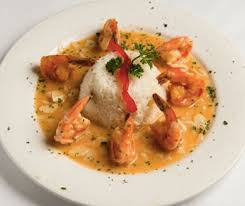

Guantanamera
Upon entering Guantanamera, I waited for no less than forty-five minutes to get any sort of seating. The venue was cramped and the customers were loud but it was the most worthwhile experience I could have ever imagined. The incredible food and drinks would have been enough for a five-star review on their own. The music, on the other hand, left me wondering why I hadn’t sought out vibrant, live performances to accompany my meals before.
First, I rarely go to a restaurant where the band is the main focus of the night, but Guantanamera made sure the band delivered. We had looked up the restaurant before going and knew that Guantanamera has live music every night starting at 9:00pm, but it was far louder and more exciting than we could have imagined. Customers from all over gather in this cramped venue night after night to experience top quality food and drink accompanied by energetic live Cuban music. Its location at 56th st and 8th Ave makes it a prime spot for anybody passing through midtown looking for an authentic experience, making the spot almost claustrophobic, but friendly and clearly full of regulars. The band playing the night that I went was called Javier Porta y su Ache, a group led by a man who spent his early years studying at a premier music university in Cuba named Javier Porta.

There was a slight wait time (for such a prime spot and time, this was totally expected), but soon enough we were seated luckily right in front of the main stage. We got there just in time to hear the band put a Cuban twist on the happy birthday song for some lucky folks, and instantly, the atmosphere was electric and energizing, and everyone was laughing and having a great time. Over the course of the night, we saw an arrangement of bass guitar, keyboard, conga drums, cowbell, and flute by the band, and Javier’s vocals were accompanied by the other musicians’ backup vocals. It was only four men on the stage, but their energetic, rich, and almost non-stop beats kept the energy up all night. The music was mainly some sort of mixture of salsa and timba music, with a modern twist; sometimes the musicians would ad-lib and perform solos that seemed spontaneous but had the precision and perfection of a well-rehearsed piece. The drummer in particular was wonderfully skilled, playing multiple drums loudly and setting a strong beat throughout each course. All the musicians were experts, showing off their incredible skills with electrifying solos and fast fingers.
There was only one tune our table really recognized (“New York New York” by Frank Sinatra), but that didn’t stop us from enjoying the rhythm and watching other folks sing along to some popular Cuban songs. You don’t have to be interested or have experience in salsa or Cuban music to enjoy these catchy, vigorous tunes and the charisma of everyone in the band, that’s for sure.
I’ve talked so much about the music because it was truly a life-changing experience. I’ve never been to a restaurant that almost made me forget about eating the food, that’s how good the music was. The food, of course, was amazing nevertheless. We ended up ordering empanadas and tapas as a starter, which was much more filling and large than we expected. Then we shared paella marinera, camarones al ajillo, as well as some giant (delicious) pitchers of sangria and guava mojito, which we thoroughly enjoyed. Everything was incredible, but the guava mojito especially had such strong flavors and citrusy zing that you must try it if you have anything.
I’m usually never wowed by bands at restaurants playing chill, light, forgettable background music, but Guantanamera’s band opened my mind to what live music can really be like. Guantanamera was like being at a concert with stunning energy from everyone, incredible performances, and amazing food as a bonus. I’ll definitely be becoming a regular here and I’m itching to come back. I can’t reiterate enough: try it for yourself!